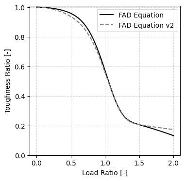
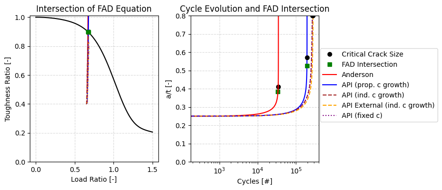
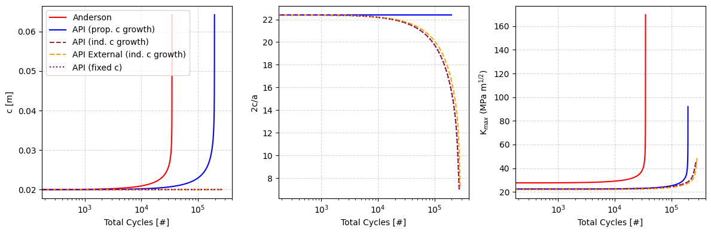
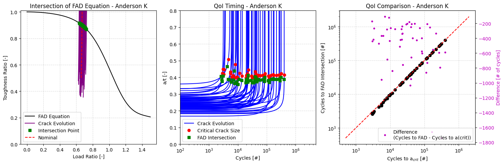
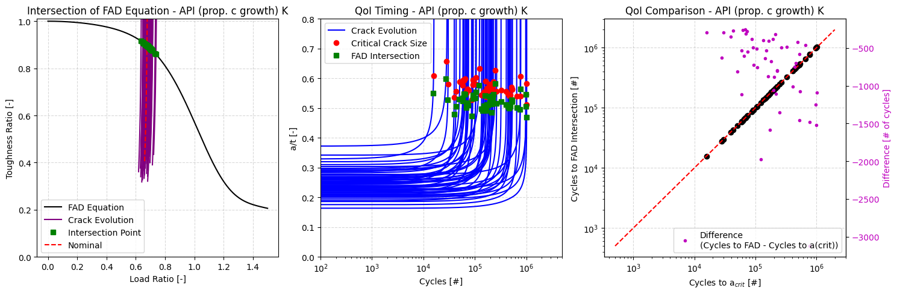
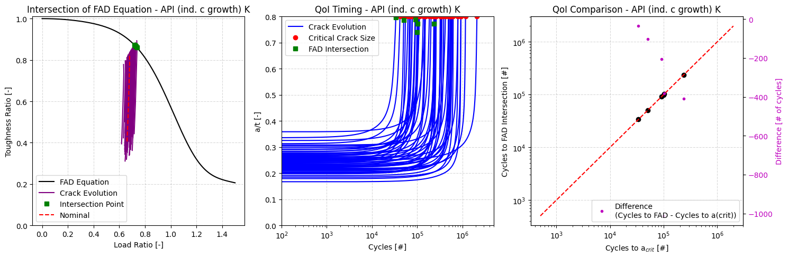
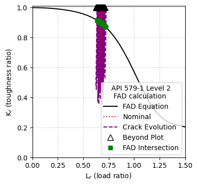
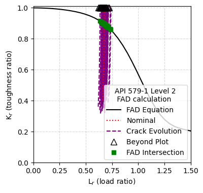
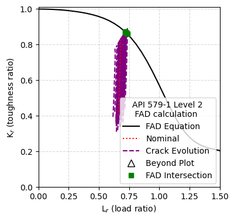

[1]:
%matplotlib inline
%load_ext autoreload
%autoreload 2
[2]:
import numpy as np
import matplotlib.pyplot as plt
from helpr.api import CrackEvolutionAnalysis
from helpr.utilities.unit_conversion import convert_psi_to_mpa, convert_in_to_m
from helpr.utilities.plots import (plot_cycle_life_cdfs, plot_cycle_life_pdfs, plot_cycle_life_criteria_scatter,
plot_pipe_life_ensemble, failure_assessment_diagram_equation)
from helpr.utilities.unit_conversion import convert_in_to_m, convert_ksi_to_mpa
import probabilistic.capabilities.uncertainty_definitions as Uncertainty
from probabilistic.capabilities.plotting import plot_sample_histogram
Demonstration of FAD Intersection as Additional Tracked QoI
Problem Specification
[3]:
outer_diameter = \
Uncertainty.UniformDistribution(name='outer_diameter',
uncertainty_type='aleatory',
nominal_value=convert_in_to_m(22),
lower_bound=convert_in_to_m(21.9),
upper_bound=convert_in_to_m(22.1))
wall_thickness = \
Uncertainty.UniformDistribution(name='wall_thickness',
uncertainty_type='aleatory',
nominal_value=convert_in_to_m(0.281),
lower_bound=convert_in_to_m(0.271),
upper_bound=convert_in_to_m(0.291))
flaw_depth = \
Uncertainty.TruncatedLognormalDistribution(name='flaw_depth',
uncertainty_type='aleatory',
nominal_value=25,
mu=3.2,
sigma=.17,
upper_bound=80,
lower_bound=0.001)
max_pressure = \
Uncertainty.TruncatedNormalDistribution(name='max_pressure',
uncertainty_type='aleatory',
nominal_value=convert_psi_to_mpa(840),
mean=convert_psi_to_mpa(850),
std_deviation=convert_psi_to_mpa(20),
lower_bound=convert_psi_to_mpa(850)-3*convert_psi_to_mpa(20),
upper_bound=convert_psi_to_mpa(850)+3*convert_psi_to_mpa(20))
min_pressure = \
Uncertainty.TruncatedNormalDistribution(name='min_pressure',
uncertainty_type='aleatory',
nominal_value=convert_psi_to_mpa(638),
mean=convert_psi_to_mpa(638),
std_deviation=convert_psi_to_mpa(20),
lower_bound=convert_psi_to_mpa(638)-3*convert_psi_to_mpa(20),
upper_bound=convert_psi_to_mpa(638)+3*convert_psi_to_mpa(20))
temperature = \
Uncertainty.UniformDistribution(name='temperature',
uncertainty_type='aleatory',
nominal_value=293,
upper_bound=300,
lower_bound=285)
volume_fraction_h2 = \
Uncertainty.DeterministicCharacterization(name='volume_fraction_h2',
value=1)
yield_strength = \
Uncertainty.DeterministicCharacterization(name='yield_strength',
value=convert_psi_to_mpa(52_000))
fracture_resistance = \
Uncertainty.DeterministicCharacterization(name='fracture_resistance',
value=55)
flaw_length = \
Uncertainty.DeterministicCharacterization(name='flaw_length',
value=0.04)
folder_path = 'temp/'
samples = 50
sample_type = 'lhs'
Evolve Crack Using Anderson K Solution with Proportional C Growth
[4]:
stress_intensity_model = 'anderson'
surface = 'inside'
delta_c_rule = 'proportional'
anderson_study = \
CrackEvolutionAnalysis(outer_diameter=outer_diameter,
wall_thickness=wall_thickness,
flaw_depth=flaw_depth,
max_pressure=max_pressure,
min_pressure=min_pressure,
temperature=temperature,
volume_fraction_h2=volume_fraction_h2,
yield_strength=yield_strength,
fracture_resistance=fracture_resistance,
flaw_length=flaw_length,
sample_type=sample_type,
aleatory_samples=samples,
stress_intensity_method=stress_intensity_model,
surface=surface,
delta_c_rule=delta_c_rule,
fad_type='API 579-1 Level 2')
anderson_study.perform_study()
/Users/bbschro/Development/helpr_external/src/helpr/physics/stress_state.py:521: UserWarning: Inner Radius / wall thickness exceeds bounds 5 <= R_i/t <= 20, R_i/t = 38.1459074733096, violating Anderson solution limits.
wr.warn('Inner Radius / wall thickness exceeds bounds ' +
/Users/bbschro/Development/helpr_external/src/helpr/physics/stress_state.py:521: UserWarning: Inner Radius / wall thickness exceeds bounds 5 <= R_i/t <= 20, R_i/t = 37.4527467027715, violating Anderson solution limits.
wr.warn('Inner Radius / wall thickness exceeds bounds ' +
/Users/bbschro/Development/helpr_external/src/helpr/physics/stress_state.py:521: UserWarning: Inner Radius / wall thickness exceeds bounds 5 <= R_i/t <= 20, R_i/t = 36.91953124051927, violating Anderson solution limits.
wr.warn('Inner Radius / wall thickness exceeds bounds ' +
/Users/bbschro/Development/helpr_external/src/helpr/physics/stress_state.py:521: UserWarning: Inner Radius / wall thickness exceeds bounds 5 <= R_i/t <= 20, R_i/t = 36.76402334018772, violating Anderson solution limits.
wr.warn('Inner Radius / wall thickness exceeds bounds ' +
/Users/bbschro/Development/helpr_external/src/helpr/physics/stress_state.py:521: UserWarning: Inner Radius / wall thickness exceeds bounds 5 <= R_i/t <= 20, R_i/t = 37.70521187710324, violating Anderson solution limits.
wr.warn('Inner Radius / wall thickness exceeds bounds ' +
/Users/bbschro/Development/helpr_external/src/helpr/physics/stress_state.py:521: UserWarning: Inner Radius / wall thickness exceeds bounds 5 <= R_i/t <= 20, R_i/t = 38.698919151745706, violating Anderson solution limits.
wr.warn('Inner Radius / wall thickness exceeds bounds ' +
/Users/bbschro/Development/helpr_external/src/helpr/physics/stress_state.py:521: UserWarning: Inner Radius / wall thickness exceeds bounds 5 <= R_i/t <= 20, R_i/t = 37.78326339006005, violating Anderson solution limits.
wr.warn('Inner Radius / wall thickness exceeds bounds ' +
/Users/bbschro/Development/helpr_external/src/helpr/physics/stress_state.py:521: UserWarning: Inner Radius / wall thickness exceeds bounds 5 <= R_i/t <= 20, R_i/t = 36.90863169324943, violating Anderson solution limits.
wr.warn('Inner Radius / wall thickness exceeds bounds ' +
/Users/bbschro/Development/helpr_external/src/helpr/physics/stress_state.py:521: UserWarning: Inner Radius / wall thickness exceeds bounds 5 <= R_i/t <= 20, R_i/t = 39.154460431377075, violating Anderson solution limits.
wr.warn('Inner Radius / wall thickness exceeds bounds ' +
/Users/bbschro/Development/helpr_external/src/helpr/physics/stress_state.py:521: UserWarning: Inner Radius / wall thickness exceeds bounds 5 <= R_i/t <= 20, R_i/t = 38.224581097211264, violating Anderson solution limits.
wr.warn('Inner Radius / wall thickness exceeds bounds ' +
/Users/bbschro/Development/helpr_external/src/helpr/physics/stress_state.py:521: UserWarning: Inner Radius / wall thickness exceeds bounds 5 <= R_i/t <= 20, R_i/t = 39.61718314593309, violating Anderson solution limits.
wr.warn('Inner Radius / wall thickness exceeds bounds ' +
/Users/bbschro/Development/helpr_external/src/helpr/physics/stress_state.py:521: UserWarning: Inner Radius / wall thickness exceeds bounds 5 <= R_i/t <= 20, R_i/t = 39.316856260436644, violating Anderson solution limits.
wr.warn('Inner Radius / wall thickness exceeds bounds ' +
/Users/bbschro/Development/helpr_external/src/helpr/physics/stress_state.py:521: UserWarning: Inner Radius / wall thickness exceeds bounds 5 <= R_i/t <= 20, R_i/t = 37.6711826174754, violating Anderson solution limits.
wr.warn('Inner Radius / wall thickness exceeds bounds ' +
/Users/bbschro/Development/helpr_external/src/helpr/physics/stress_state.py:521: UserWarning: Inner Radius / wall thickness exceeds bounds 5 <= R_i/t <= 20, R_i/t = 38.131131998452084, violating Anderson solution limits.
wr.warn('Inner Radius / wall thickness exceeds bounds ' +
/Users/bbschro/Development/helpr_external/src/helpr/physics/stress_state.py:521: UserWarning: Inner Radius / wall thickness exceeds bounds 5 <= R_i/t <= 20, R_i/t = 37.418618744183995, violating Anderson solution limits.
wr.warn('Inner Radius / wall thickness exceeds bounds ' +
/Users/bbschro/Development/helpr_external/src/helpr/physics/stress_state.py:521: UserWarning: Inner Radius / wall thickness exceeds bounds 5 <= R_i/t <= 20, R_i/t = 38.53684890505719, violating Anderson solution limits.
wr.warn('Inner Radius / wall thickness exceeds bounds ' +
/Users/bbschro/Development/helpr_external/src/helpr/physics/stress_state.py:521: UserWarning: Inner Radius / wall thickness exceeds bounds 5 <= R_i/t <= 20, R_i/t = 38.67034142066473, violating Anderson solution limits.
wr.warn('Inner Radius / wall thickness exceeds bounds ' +
/Users/bbschro/Development/helpr_external/src/helpr/physics/stress_state.py:521: UserWarning: Inner Radius / wall thickness exceeds bounds 5 <= R_i/t <= 20, R_i/t = 38.79745276966965, violating Anderson solution limits.
wr.warn('Inner Radius / wall thickness exceeds bounds ' +
/Users/bbschro/Development/helpr_external/src/helpr/physics/stress_state.py:521: UserWarning: Inner Radius / wall thickness exceeds bounds 5 <= R_i/t <= 20, R_i/t = 37.742348634714745, violating Anderson solution limits.
wr.warn('Inner Radius / wall thickness exceeds bounds ' +
/Users/bbschro/Development/helpr_external/src/helpr/physics/stress_state.py:521: UserWarning: Inner Radius / wall thickness exceeds bounds 5 <= R_i/t <= 20, R_i/t = 39.03178965427649, violating Anderson solution limits.
wr.warn('Inner Radius / wall thickness exceeds bounds ' +
/Users/bbschro/Development/helpr_external/src/helpr/physics/stress_state.py:521: UserWarning: Inner Radius / wall thickness exceeds bounds 5 <= R_i/t <= 20, R_i/t = 37.088039584089024, violating Anderson solution limits.
wr.warn('Inner Radius / wall thickness exceeds bounds ' +
/Users/bbschro/Development/helpr_external/src/helpr/physics/stress_state.py:521: UserWarning: Inner Radius / wall thickness exceeds bounds 5 <= R_i/t <= 20, R_i/t = 38.62379316083975, violating Anderson solution limits.
wr.warn('Inner Radius / wall thickness exceeds bounds ' +
/Users/bbschro/Development/helpr_external/src/helpr/physics/stress_state.py:521: UserWarning: Inner Radius / wall thickness exceeds bounds 5 <= R_i/t <= 20, R_i/t = 38.55481690274214, violating Anderson solution limits.
wr.warn('Inner Radius / wall thickness exceeds bounds ' +
/Users/bbschro/Development/helpr_external/src/helpr/physics/stress_state.py:521: UserWarning: Inner Radius / wall thickness exceeds bounds 5 <= R_i/t <= 20, R_i/t = 37.01904048611399, violating Anderson solution limits.
wr.warn('Inner Radius / wall thickness exceeds bounds ' +
/Users/bbschro/Development/helpr_external/src/helpr/physics/stress_state.py:521: UserWarning: Inner Radius / wall thickness exceeds bounds 5 <= R_i/t <= 20, R_i/t = 38.05943408844065, violating Anderson solution limits.
wr.warn('Inner Radius / wall thickness exceeds bounds ' +
/Users/bbschro/Development/helpr_external/src/helpr/physics/stress_state.py:521: UserWarning: Inner Radius / wall thickness exceeds bounds 5 <= R_i/t <= 20, R_i/t = 38.21222565230461, violating Anderson solution limits.
wr.warn('Inner Radius / wall thickness exceeds bounds ' +
/Users/bbschro/Development/helpr_external/src/helpr/physics/stress_state.py:521: UserWarning: Inner Radius / wall thickness exceeds bounds 5 <= R_i/t <= 20, R_i/t = 37.10183101481118, violating Anderson solution limits.
wr.warn('Inner Radius / wall thickness exceeds bounds ' +
/Users/bbschro/Development/helpr_external/src/helpr/physics/stress_state.py:521: UserWarning: Inner Radius / wall thickness exceeds bounds 5 <= R_i/t <= 20, R_i/t = 37.48424817608055, violating Anderson solution limits.
wr.warn('Inner Radius / wall thickness exceeds bounds ' +
/Users/bbschro/Development/helpr_external/src/helpr/physics/stress_state.py:521: UserWarning: Inner Radius / wall thickness exceeds bounds 5 <= R_i/t <= 20, R_i/t = 38.85074581877918, violating Anderson solution limits.
wr.warn('Inner Radius / wall thickness exceeds bounds ' +
/Users/bbschro/Development/helpr_external/src/helpr/physics/stress_state.py:521: UserWarning: Inner Radius / wall thickness exceeds bounds 5 <= R_i/t <= 20, R_i/t = 38.22455792949237, violating Anderson solution limits.
wr.warn('Inner Radius / wall thickness exceeds bounds ' +
/Users/bbschro/Development/helpr_external/src/helpr/physics/stress_state.py:521: UserWarning: Inner Radius / wall thickness exceeds bounds 5 <= R_i/t <= 20, R_i/t = 36.98714428915717, violating Anderson solution limits.
wr.warn('Inner Radius / wall thickness exceeds bounds ' +
/Users/bbschro/Development/helpr_external/src/helpr/physics/stress_state.py:521: UserWarning: Inner Radius / wall thickness exceeds bounds 5 <= R_i/t <= 20, R_i/t = 37.90490407844055, violating Anderson solution limits.
wr.warn('Inner Radius / wall thickness exceeds bounds ' +
/Users/bbschro/Development/helpr_external/src/helpr/physics/stress_state.py:521: UserWarning: Inner Radius / wall thickness exceeds bounds 5 <= R_i/t <= 20, R_i/t = 38.265057515849506, violating Anderson solution limits.
wr.warn('Inner Radius / wall thickness exceeds bounds ' +
/Users/bbschro/Development/helpr_external/src/helpr/physics/stress_state.py:521: UserWarning: Inner Radius / wall thickness exceeds bounds 5 <= R_i/t <= 20, R_i/t = 37.19492455814548, violating Anderson solution limits.
wr.warn('Inner Radius / wall thickness exceeds bounds ' +
/Users/bbschro/Development/helpr_external/src/helpr/physics/stress_state.py:521: UserWarning: Inner Radius / wall thickness exceeds bounds 5 <= R_i/t <= 20, R_i/t = 37.23235262030223, violating Anderson solution limits.
wr.warn('Inner Radius / wall thickness exceeds bounds ' +
/Users/bbschro/Development/helpr_external/src/helpr/physics/stress_state.py:521: UserWarning: Inner Radius / wall thickness exceeds bounds 5 <= R_i/t <= 20, R_i/t = 38.43925533432422, violating Anderson solution limits.
wr.warn('Inner Radius / wall thickness exceeds bounds ' +
/Users/bbschro/Development/helpr_external/src/helpr/physics/stress_state.py:521: UserWarning: Inner Radius / wall thickness exceeds bounds 5 <= R_i/t <= 20, R_i/t = 37.831479271253826, violating Anderson solution limits.
wr.warn('Inner Radius / wall thickness exceeds bounds ' +
/Users/bbschro/Development/helpr_external/src/helpr/physics/stress_state.py:521: UserWarning: Inner Radius / wall thickness exceeds bounds 5 <= R_i/t <= 20, R_i/t = 38.88250391248408, violating Anderson solution limits.
wr.warn('Inner Radius / wall thickness exceeds bounds ' +
/Users/bbschro/Development/helpr_external/src/helpr/physics/stress_state.py:521: UserWarning: Inner Radius / wall thickness exceeds bounds 5 <= R_i/t <= 20, R_i/t = 38.63549249196558, violating Anderson solution limits.
wr.warn('Inner Radius / wall thickness exceeds bounds ' +
/Users/bbschro/Development/helpr_external/src/helpr/physics/stress_state.py:521: UserWarning: Inner Radius / wall thickness exceeds bounds 5 <= R_i/t <= 20, R_i/t = 39.13986568202861, violating Anderson solution limits.
wr.warn('Inner Radius / wall thickness exceeds bounds ' +
/Users/bbschro/Development/helpr_external/src/helpr/physics/stress_state.py:521: UserWarning: Inner Radius / wall thickness exceeds bounds 5 <= R_i/t <= 20, R_i/t = 39.50516078794278, violating Anderson solution limits.
wr.warn('Inner Radius / wall thickness exceeds bounds ' +
/Users/bbschro/Development/helpr_external/src/helpr/physics/stress_state.py:521: UserWarning: Inner Radius / wall thickness exceeds bounds 5 <= R_i/t <= 20, R_i/t = 37.58506657068574, violating Anderson solution limits.
wr.warn('Inner Radius / wall thickness exceeds bounds ' +
/Users/bbschro/Development/helpr_external/src/helpr/physics/stress_state.py:521: UserWarning: Inner Radius / wall thickness exceeds bounds 5 <= R_i/t <= 20, R_i/t = 37.288033395598475, violating Anderson solution limits.
wr.warn('Inner Radius / wall thickness exceeds bounds ' +
/Users/bbschro/Development/helpr_external/src/helpr/physics/stress_state.py:521: UserWarning: Inner Radius / wall thickness exceeds bounds 5 <= R_i/t <= 20, R_i/t = 38.15449987322188, violating Anderson solution limits.
wr.warn('Inner Radius / wall thickness exceeds bounds ' +
/Users/bbschro/Development/helpr_external/src/helpr/physics/stress_state.py:521: UserWarning: Inner Radius / wall thickness exceeds bounds 5 <= R_i/t <= 20, R_i/t = 39.02934374660628, violating Anderson solution limits.
wr.warn('Inner Radius / wall thickness exceeds bounds ' +
/Users/bbschro/Development/helpr_external/src/helpr/physics/stress_state.py:521: UserWarning: Inner Radius / wall thickness exceeds bounds 5 <= R_i/t <= 20, R_i/t = 37.90848071271014, violating Anderson solution limits.
wr.warn('Inner Radius / wall thickness exceeds bounds ' +
/Users/bbschro/Development/helpr_external/src/helpr/physics/stress_state.py:521: UserWarning: Inner Radius / wall thickness exceeds bounds 5 <= R_i/t <= 20, R_i/t = 39.25982132207516, violating Anderson solution limits.
wr.warn('Inner Radius / wall thickness exceeds bounds ' +
/Users/bbschro/Development/helpr_external/src/helpr/physics/stress_state.py:521: UserWarning: Inner Radius / wall thickness exceeds bounds 5 <= R_i/t <= 20, R_i/t = 39.38953444029194, violating Anderson solution limits.
wr.warn('Inner Radius / wall thickness exceeds bounds ' +
/Users/bbschro/Development/helpr_external/src/helpr/physics/stress_state.py:521: UserWarning: Inner Radius / wall thickness exceeds bounds 5 <= R_i/t <= 20, R_i/t = 38.83739297994622, violating Anderson solution limits.
wr.warn('Inner Radius / wall thickness exceeds bounds ' +
/Users/bbschro/Development/helpr_external/src/helpr/physics/stress_state.py:521: UserWarning: Inner Radius / wall thickness exceeds bounds 5 <= R_i/t <= 20, R_i/t = 37.3455630992827, violating Anderson solution limits.
wr.warn('Inner Radius / wall thickness exceeds bounds ' +
/Users/bbschro/Development/helpr_external/src/helpr/physics/stress_state.py:521: UserWarning: Inner Radius / wall thickness exceeds bounds 5 <= R_i/t <= 20, R_i/t = 39.48351973122146, violating Anderson solution limits.
wr.warn('Inner Radius / wall thickness exceeds bounds ' +
Evolve Crack Using API 579-1 K Solution with Proporaitonal C Growth
[5]:
stress_intensity_model = 'api'
surface = 'inside'
delta_c_rule = 'proportional'
api_prop_study = \
CrackEvolutionAnalysis(outer_diameter=outer_diameter,
wall_thickness=wall_thickness,
flaw_depth=flaw_depth,
max_pressure=max_pressure,
min_pressure=min_pressure,
temperature=temperature,
volume_fraction_h2=volume_fraction_h2,
yield_strength=yield_strength,
fracture_resistance=fracture_resistance,
flaw_length=flaw_length,
sample_type=sample_type,
aleatory_samples=samples,
stress_intensity_method=stress_intensity_model,
surface=surface,
delta_c_rule=delta_c_rule,
fad_type='API 579-1 Level 2')
api_prop_study.perform_study()
Evolve Crack Using API 579-1 K Solution with Independent C Growth
[6]:
stress_intensity_model = 'api'
surface = 'inside'
delta_c_rule = 'independent'
api_ind_study = \
CrackEvolutionAnalysis(outer_diameter=outer_diameter,
wall_thickness=wall_thickness,
flaw_depth=flaw_depth,
max_pressure=max_pressure,
min_pressure=min_pressure,
temperature=temperature,
volume_fraction_h2=volume_fraction_h2,
yield_strength=yield_strength,
fracture_resistance=fracture_resistance,
flaw_length=flaw_length,
sample_type=sample_type,
aleatory_samples=samples,
stress_intensity_method=stress_intensity_model,
surface=surface,
delta_c_rule=delta_c_rule,
fad_type='API 579-1 Level 2')
api_ind_study.perform_study()
/Users/bbschro/Development/helpr_external/src/helpr/utilities/postprocessing.py:363: UserWarning: Kmax + Kres did not reach fracture resistance for at least one crack, setting a_crit/t = 0.8 for such cracks
wr.warn('Kmax + Kres did not reach fracture resistance for at least one crack, ' +
Evolve Crack Using API 579-1 K Solution with Independent C Growth for External Crack
[7]:
stress_intensity_model = 'api'
surface = 'outside'
delta_c_rule = 'independent'
api_ind_out_study = \
CrackEvolutionAnalysis(outer_diameter=outer_diameter,
wall_thickness=wall_thickness,
flaw_depth=flaw_depth,
max_pressure=max_pressure,
min_pressure=min_pressure,
temperature=temperature,
volume_fraction_h2=volume_fraction_h2,
yield_strength=yield_strength,
fracture_resistance=fracture_resistance,
flaw_length=flaw_length,
sample_type=sample_type,
aleatory_samples=samples,
stress_intensity_method=stress_intensity_model,
surface=surface,
delta_c_rule=delta_c_rule,
fad_type='API 579-1 Level 2')
api_ind_out_study.perform_study()
/Users/bbschro/Development/helpr_external/src/helpr/utilities/postprocessing.py:363: UserWarning: Kmax + Kres did not reach fracture resistance for at least one crack, setting a_crit/t = 0.8 for such cracks
wr.warn('Kmax + Kres did not reach fracture resistance for at least one crack, ' +
Evolve Crack Using API 579-1 K Solution with Fixed C
[8]:
stress_intensity_model = 'api'
surface = 'inside'
delta_c_rule = 'fixed'
api_fixed_study = \
CrackEvolutionAnalysis(outer_diameter=outer_diameter,
wall_thickness=wall_thickness,
flaw_depth=flaw_depth,
max_pressure=max_pressure,
min_pressure=min_pressure,
temperature=temperature,
volume_fraction_h2=volume_fraction_h2,
yield_strength=yield_strength,
fracture_resistance=fracture_resistance,
flaw_length=flaw_length,
sample_type=sample_type,
aleatory_samples=samples,
stress_intensity_method=stress_intensity_model,
surface=surface,
delta_c_rule=delta_c_rule,
fad_type='API 579-1 Level 2')
api_fixed_study.perform_study()
/Users/bbschro/Development/helpr_external/src/helpr/utilities/postprocessing.py:363: UserWarning: Kmax + Kres did not reach fracture resistance for at least one crack, setting a_crit/t = 0.8 for such cracks
wr.warn('Kmax + Kres did not reach fracture resistance for at least one crack, ' +
FAD Line Equations
[9]:
def failure_assessment_diagram_equation(load_ratio):
"""Calculates line from FAD equation.
Eq. 9.22 on page 9-61 of API 579-1/ASME FFS-1, June, 2016 Fitness-For-Service"""
toughness_ratio = (1 - 0.14 * load_ratio**2) * (0.3 + 0.7 * np.exp(-0.65 * load_ratio**6))
return toughness_ratio
def failure_assessment_diagram_equation_v2(load_ratio):
"""Calculates line from FAD equation.
Eq. supposed to be in API 579 2021 Fitness-For-Service"""
toughness_ratio = (1 + load_ratio**2/2)**(-1/2) * (0.3 + 0.7 * np.exp(-0.6 * load_ratio**6))
return toughness_ratio
Plot of FAD Lines
[10]:
# Generate load ratios for the FAD equation
load_ratios = np.linspace(0, 2, 1000)
fad_values = failure_assessment_diagram_equation(load_ratios)
fad_values_v2 = failure_assessment_diagram_equation_v2(load_ratios)
plt.figure(figsize=(4, 4))
# Plot of FAD curve and data intersection point
plt.plot(load_ratios, fad_values, label='FAD Equation', color='black')
plt.plot(load_ratios, fad_values_v2, label='FAD Equation v2', color='gray', linestyle='--')
plt.xlabel('Load Ratio [-]')
plt.ylabel('Toughness Ratio [-]')
plt.ylim(0, 1.01)
plt.legend(loc='best')
plt.grid(alpha=0.3, color='gray', linestyle='--')

Plot of FAD Intersections and Crack Evolutions
[11]:
# Generate load ratios for the FAD equation
load_ratios = np.linspace(0, 1.5, 1000)
fad_values = failure_assessment_diagram_equation(load_ratios)
# Create subplots: 1 row, 2 columns
fig, axs = plt.subplots(1, 2, figsize=(10, 4))
# Plot of FAD curve and data intersection point
axs[0].plot(load_ratios, fad_values, label='FAD Equation', color='black')
axs[0].plot(anderson_study.nominal_load_cycling[0]['Load ratio'],
anderson_study.nominal_load_cycling[0]['Toughness ratio'],
'r-', label='Anderson')
axs[0].plot(anderson_study.nominal_life_criteria['Cycles to FAD line'][2],
anderson_study.nominal_life_criteria['Cycles to FAD line'][3],
'gs', label='Intersection Point')
axs[0].plot(api_prop_study.nominal_load_cycling[0]['Load ratio'],
api_prop_study.nominal_load_cycling[0]['Toughness ratio'],
color='blue', linestyle='-', label='API (prop. c growth)')
axs[0].plot(api_prop_study.nominal_life_criteria['Cycles to FAD line'][2],
api_prop_study.nominal_life_criteria['Cycles to FAD line'][3],
'gs')
axs[0].plot(api_ind_study.nominal_load_cycling[0]['Load ratio'],
api_ind_study.nominal_load_cycling[0]['Toughness ratio'],
color='purple', linestyle='--', label='API (ind. c growth)')
axs[0].plot(api_ind_study.nominal_life_criteria['Cycles to FAD line'][2],
api_ind_study.nominal_life_criteria['Cycles to FAD line'][3],
'gs')
axs[0].plot(api_ind_out_study.nominal_load_cycling[0]['Load ratio'],
api_ind_out_study.nominal_load_cycling[0]['Toughness ratio'],
color='brown', linestyle='--', label='API external (ind. c growth)')
axs[0].plot(api_ind_out_study.nominal_life_criteria['Cycles to FAD line'][2],
api_ind_out_study.nominal_life_criteria['Cycles to FAD line'][3],
'gs')
axs[0].plot(api_fixed_study.nominal_load_cycling[0]['Load ratio'],
api_fixed_study.nominal_load_cycling[0]['Toughness ratio'],
color='orange', linestyle=':', label='API (fixed c)')
axs[0].plot(api_fixed_study.nominal_life_criteria['Cycles to FAD line'][2],
api_fixed_study.nominal_life_criteria['Cycles to FAD line'][3],
'gs')
axs[0].set_title('Intersection of FAD Equation')
axs[0].set_xlabel('Load Ratio [-]')
axs[0].set_ylabel('Toughness Ratio [-]')
axs[0].set_ylim(0, 1.01)
#axs[0].legend(loc='best')
axs[0].grid(alpha=0.3, color='gray', linestyle='--')
# Plot of cycle evolution and when FAD intersection occurs
axs[1].plot(anderson_study.nominal_life_criteria['Cycles to a(crit)'][0][0],
anderson_study.nominal_life_criteria['Cycles to a(crit)'][1][0],
'ko', label='Critical Crack Size')
axs[1].plot(anderson_study.nominal_life_criteria['Cycles to FAD line'][0],
anderson_study.nominal_life_criteria['Cycles to FAD line'][1],
'gs', label='FAD Intersection')
axs[1].plot(anderson_study.nominal_load_cycling[0]['Total cycles'],
anderson_study.nominal_load_cycling[0]['a/t'],
'r-', label='Anderson')
axs[1].plot(api_prop_study.nominal_load_cycling[0]['Total cycles'],
api_prop_study.nominal_load_cycling[0]['a/t'],
'b-', label='API (prop. c growth)')
axs[1].plot(api_prop_study.nominal_life_criteria['Cycles to a(crit)'][0][0],
api_prop_study.nominal_life_criteria['Cycles to a(crit)'][1][0],
'ko')
axs[1].plot(api_prop_study.nominal_life_criteria['Cycles to FAD line'][0],
api_prop_study.nominal_life_criteria['Cycles to FAD line'][1],
'gs')
axs[1].plot(api_ind_study.nominal_load_cycling[0]['Total cycles'],
api_ind_study.nominal_load_cycling[0]['a/t'],
color='brown', linestyle='--', label='API (ind. c growth)')
axs[1].plot(api_ind_study.nominal_life_criteria['Cycles to a(crit)'][0][0],
api_ind_study.nominal_life_criteria['Cycles to a(crit)'][1][0],
'ko')
axs[1].plot(api_ind_study.nominal_life_criteria['Cycles to FAD line'][0],
api_ind_study.nominal_life_criteria['Cycles to FAD line'][1],
'gs')
axs[1].plot(api_ind_out_study.nominal_load_cycling[0]['Total cycles'],
api_ind_out_study.nominal_load_cycling[0]['a/t'],
color='orange', linestyle='--', label='API External (ind. c growth)')
axs[1].plot(api_ind_out_study.nominal_life_criteria['Cycles to a(crit)'][0][0],
api_ind_out_study.nominal_life_criteria['Cycles to a(crit)'][1][0],
'ko')
axs[1].plot(api_ind_out_study.nominal_life_criteria['Cycles to FAD line'][0],
api_ind_out_study.nominal_life_criteria['Cycles to FAD line'][1],
'gs')
axs[1].plot(api_fixed_study.nominal_load_cycling[0]['Total cycles'],
api_fixed_study.nominal_load_cycling[0]['a/t'],
color='purple', linestyle=':', label='API (fixed c)')
axs[1].plot(api_fixed_study.nominal_life_criteria['Cycles to a(crit)'][0][0],
api_fixed_study.nominal_life_criteria['Cycles to a(crit)'][1][0],
'ko')
axs[1].plot(api_fixed_study.nominal_life_criteria['Cycles to FAD line'][0],
api_fixed_study.nominal_life_criteria['Cycles to FAD line'][1],
'gs')
axs[1].set_title('Cycle Evolution and FAD Intersection')
axs[1].set_xlabel('Cycles [#]')
axs[1].set_ylabel('a/t [-]')
#axs[1].legend(loc='best')
axs[1].legend(loc='upper right', bbox_to_anchor=(1.95, 0.8))
axs[1].set_ylim(0, 0.8)
axs[1].grid(alpha=0.3, color='gray', linestyle='--')
axs[1].set_xscale('log')
# Adjust layout to prevent overlap
plt.tight_layout()

Plot of Crack Depth (a) and Length (c) Growth Given Different Assumptions
[12]:
# Create subplots: 1 row, 3 columns
fig, axs = plt.subplots(1, 3, figsize=(12, 4))
axs[0].plot(anderson_study.nominal_load_cycling[0]['Total cycles'],
anderson_study.nominal_load_cycling[0]['c (m)'],
'r-', label='Anderson')
axs[0].plot(api_prop_study.nominal_load_cycling[0]['Total cycles'],
api_prop_study.nominal_load_cycling[0]['c (m)'],
'b-', label='API (prop. c growth)')
axs[0].plot(api_ind_study.nominal_load_cycling[0]['Total cycles'],
api_ind_study.nominal_load_cycling[0]['c (m)'],
color='brown', linestyle='--', label='API (ind. c growth)')
axs[0].plot(api_ind_out_study.nominal_load_cycling[0]['Total cycles'],
api_ind_out_study.nominal_load_cycling[0]['c (m)'],
color='orange', linestyle='--', label='API External (ind. c growth)')
axs[0].plot(api_fixed_study.nominal_load_cycling[0]['Total cycles'],
api_fixed_study.nominal_load_cycling[0]['c (m)'],
color='purple', linestyle=':', label='API (fixed c)')
axs[0].set_xlabel('Total Cycles [#]')
axs[0].set_ylabel('c [m]')
axs[0].grid(alpha=0.3, color='gray', linestyle='--')
axs[0].set_xscale('log')
axs[0].legend(loc=0)
axs[1].plot(anderson_study.nominal_load_cycling[0]['Total cycles'],
2*np.array(anderson_study.nominal_load_cycling[0]['c (m)'])\
/np.array(anderson_study.nominal_load_cycling[0]['a (m)']),
'r-', label='Anderson')
axs[1].plot(api_prop_study.nominal_load_cycling[0]['Total cycles'],
2*np.array(api_prop_study.nominal_load_cycling[0]['c (m)'])\
/np.array(api_prop_study.nominal_load_cycling[0]['a (m)']),
'b-', label='API (prop. c growth)')
axs[1].plot(api_ind_study.nominal_load_cycling[0]['Total cycles'],
2*np.array(api_ind_study.nominal_load_cycling[0]['c (m)'])\
/np.array(api_ind_study.nominal_load_cycling[0]['a (m)']),
color='brown', linestyle='--', label='API (ind. c growth)')
axs[1].plot(api_ind_out_study.nominal_load_cycling[0]['Total cycles'],
2*np.array(api_ind_out_study.nominal_load_cycling[0]['c (m)'])\
/np.array(api_ind_out_study.nominal_load_cycling[0]['a (m)']),
color='orange', linestyle='--', label='API External (ind. c growth)')
axs[1].plot(api_fixed_study.nominal_load_cycling[0]['Total cycles'],
2*np.array(api_fixed_study.nominal_load_cycling[0]['c (m)'])\
/np.array(api_fixed_study.nominal_load_cycling[0]['a (m)']),
color='purple', linestyle=':', label='API (fixed c)')
axs[1].set_xlabel('Total Cycles [#]')
axs[1].set_ylabel('2c/a')
axs[1].grid(alpha=0.3, color='gray', linestyle='--')
axs[1].set_xscale('log')
axs[2].plot(anderson_study.nominal_load_cycling[0]['Total cycles'],
anderson_study.nominal_load_cycling[0]['Kmax (MPa m^1/2)'],
'r-', label='Anderson')
axs[2].plot(api_prop_study.nominal_load_cycling[0]['Total cycles'],
api_prop_study.nominal_load_cycling[0]['Kmax (MPa m^1/2)'],
'b-', label='API (prop. c growth)')
axs[2].plot(api_ind_study.nominal_load_cycling[0]['Total cycles'],
api_ind_study.nominal_load_cycling[0]['Kmax (MPa m^1/2)'],
color='brown', linestyle='--', label='API (ind. c growth)')
axs[2].plot(api_ind_out_study.nominal_load_cycling[0]['Total cycles'],
api_ind_out_study.nominal_load_cycling[0]['Kmax (MPa m^1/2)'],
color='orange', linestyle='--', label='API External (ind. c growth)')
axs[2].plot(api_fixed_study.nominal_load_cycling[0]['Total cycles'],
api_fixed_study.nominal_load_cycling[0]['Kmax (MPa m^1/2)'],
color='purple', linestyle=':', label='API (fixed c)')
axs[2].set_xlabel('Total Cycles [#]')
axs[2].set_ylabel('K$_{max}$ (MPa m$^{1/2}$)')
axs[2].grid(alpha=0.3, color='gray', linestyle='--')
axs[2].set_xscale('log')
# # Adjust layout to prevent overlap
plt.tight_layout();

Plots Comparing Probabilistic FAD Instersection QoI w/ Critical Crack Size
[13]:
# Define a list of intersection data for each dataset
data_sets = [anderson_study,
api_prop_study,
api_ind_study]
dataset_labels = ['Anderson',
'API (prop. c growth)',
'API (ind. c growth)']
for data_set, label in zip(data_sets, dataset_labels):
# Create subplots: 1 row, 3 columns
fig, axs = plt.subplots(1, 3, figsize=(15, 5))
# Plot of FAD curve and data intersection points for each dataset
ax = axs[0]
ax.plot(load_ratios, fad_values, label='FAD Equation', color='black')
# Placeholder for legend entries
ax.plot([], [], color='purple', linestyle='-', label='Crack Evolution')
ax.plot([], [], 'gs', label='Intersection Point')
for i in range(data_set.study.total_sample_size):
load_ratio_data = np.array(data_set.load_cycling[i]['Load ratio'])
toughness_ratio_data = np.array(data_set.load_cycling[i]['Toughness ratio'])
ax.plot(load_ratio_data, toughness_ratio_data, color='purple', linestyle='-')
ax.plot(data_set.nominal_load_cycling[0]['Load ratio'],
data_set.nominal_load_cycling[0]['Toughness ratio'],
color='red', linestyle='--', label='Nominal')
# Plot intersection point for the current dataset
ax.plot(data_set.life_criteria['Cycles to FAD line'][2],
data_set.life_criteria['Cycles to FAD line'][3],
'gs')
ax.set_title(f'Intersection of FAD Equation - {label} K')
ax.set_xlabel('Load Ratio [-]')
ax.set_ylabel('Toughness Ratio [-]')
ax.set_ylim(0, 1.01)
ax.legend(loc='best')
ax.grid(alpha=0.3, color='gray', linestyle='--')
# Plot of cycle evolution and when FAD intersection occurs
ax = axs[1] # Use the second subplot for cycle evolution
ax.plot([], [], 'b-', label='Crack Evolution')
ax.plot([], [], 'ro', label='Critical Crack Size')
ax.plot([], [], 'gs', label='FAD Intersection')
for i in range(data_set.study.total_sample_size):
cycles = np.array(data_set.load_cycling[i]['Total cycles'])
a_over_t = np.array(data_set.load_cycling[i]['a/t'])
ax.plot(cycles, a_over_t, 'b-')
# Critical crack size and cycles to reach it
a_crit_over_t = data_set.life_criteria['Cycles to a(crit)'][1]
cycles_to_a_crit = data_set.life_criteria['Cycles to a(crit)'][0]
ax.plot(cycles_to_a_crit, a_crit_over_t, 'ro')
# Plot FAD intersection for the current dataset
ax.plot(data_set.life_criteria['Cycles to FAD line'][0],
data_set.life_criteria['Cycles to FAD line'][1],
'gs')
ax.set_title(f'QoI Timing - {label} K')
ax.set_xlabel('Cycles [#]')
ax.set_ylabel('a/t [-]')
ax.legend(loc='best')
ax.set_xlim(1e2, 5e6)
ax.set_ylim(0, 0.8)
ax.set_xscale('log')
ax.grid(alpha=0.3, color='gray', linestyle='--')
# Plot Comparing Cycles Critical Crack Size and FAD Intersection
ax = axs[2] # Use the third subplot for comparing cycles
for i in range(data_set.study.total_sample_size):
cycles_to_a_crit = data_set.life_criteria['Cycles to a(crit)'][0][i]
# cycles_to_fad_intersection = intersection_info[i]['cycles_fad_criteria']
cycles_to_fad_intersection = data_set.life_criteria['Cycles to FAD line'][0][i]
ax.plot(cycles_to_a_crit, cycles_to_fad_intersection, 'ko')
# Add a diagonal line with slope 1
x_values = np.logspace(2.7, 6.3, 2)
ax.plot(x_values, x_values, 'r--')
ax.set_title(f'QoI Comparison - {label} K')
ax.set_xlabel('Cycles to a$_{crit}$ [#]')
ax.set_ylabel('Cycles to FAD Intersection [#]')
ax.set_xscale('log')
ax.set_yscale('log')
ax.grid(alpha=0.3, color='gray', linestyle='--')
# Calculate the difference and plot on the right y-axis
ax_diff = ax.twinx() # Create a twin y-axis
differences = [data_set.life_criteria['Cycles to FAD line'][0][i] -
data_set.life_criteria['Cycles to a(crit)'][0][i]
for i in range(data_set.study.total_sample_size)]
ax_diff.plot(data_set.life_criteria['Cycles to a(crit)'][0],
differences,
'm.',
label='Difference\n(Cycles to FAD - Cycles to a(crit))')
ax_diff.set_ylabel('Difference [# of cycles]', color='m')
ax_diff.tick_params(axis='y', labelcolor='m')
ax_diff.grid(False) # Disable grid for the twin axis
ax_diff.legend(loc='lower right')
# Adjust layout to prevent overlap
plt.tight_layout()



Demonstrating FAD Plot Generation Built into API
[14]:
_ = anderson_study.assemble_failure_assessment_diagram()
_ = api_prop_study.assemble_failure_assessment_diagram()
_ = api_ind_study.assemble_failure_assessment_diagram()


